Vítejte ve vesnici Havraní Lhota. Je hluboká noc, venku zuří bouřka a... kdosi křičí. Vyběhnete na náměstí, kde najdete zavražděného člověka nabodnutého na ručičce kostelních hodin, odkud na kamennou dlažbu stéká krev. Je jasné, že je to dílo Démona, který v noci zabíjí a ve dne na sebe bere lidskou podobu.
Základní Princip Hry
Blood je detektivně-sociální hra, podobná jako Městečko Palermo, Among Us, Secret Hitler, či reality-show Zrádci.
Během hry se střídá den a noc. Ve dne se hráči mohou potloukat po městě a zjišťovat důležité indicie k odhalení Démona. Večer se sejdou na náměstí, kdy mohou popravit jednoho hráče a doufat v to, že zrovna tento hráč byl skrytý Démon. Jakmile ale padne soumrak, začne temná noc, ve které se vždy Démon probudí a zavraždí dalšího hráče, dokud nevyvraždí celé město. Ale dávej si pozor, Démon není sám, pomáhají mu jeho Přisluhovači.. Proto nikdy nevíš, kdo Tě zrovna tahá za nos.
Začátek Hry
Před každým začátkem hry se vybere takzvaný skript který se bude hrát, což je seznam rolí, které mohou být zrovna ve hře. Například základní skript jménem Potíže Přicházejí vypadá takto:
Nemusíš se bát, každý hráč dostane A4 s tímto skriptem, takže se kdykoliv můžeš podívat, které role mohou být ve hře a jaké schopnosti role mají.
Každý si vybere svoje místo v kruhu židlí a posadí se na něj. Tento kruh představuje naše náměstí v Havraní Lhotě, kde se každý večer budeme scházet.
Losování
Vypravěč si před začátkem hry tajně vybere role ze skriptu podle počtu hráčů tak, aby každý hráč dostal jednu roli. Poté si vylosuje každý hráč (také tajně) jednu roli, kterou se od teď stává.
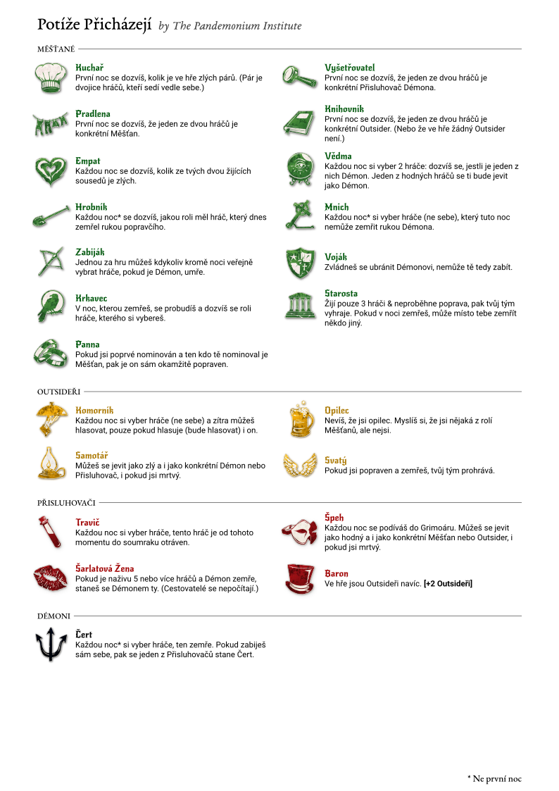
Cíl Hry & Rozdělení Týmů
Ve hře jsou dva týmy, které proti sobě hrají: Hodní a Zlí. Tvůj tým ti na začátku určuje tvá role. (ALE POZOR! Jsou zde role, které mohou měnit příslušnost týmu. Tedy na začátku můžeš být hodný měšťan, ale během hry se z tebe může stát zlý měšťan.)
Hodní
Jsou to Měšťani a Outsideři.
Měšťani mají užitečné schopnosti, které pomahají odhalit a dopátrat se, kdo je Démon nebo zpomalit jeho zabíjení. Outsideři jsou spíše neužiteční, ale i přesto jsou součástí města a hodného týmu. Často disponují schopností, která buď pomáhá zlému týmu nebo vytváří tolik nežádoucí chaos.
Cíl hodných je odhalit a popravit Démona. Pokud Démon zemře, hodní vyhrávají.
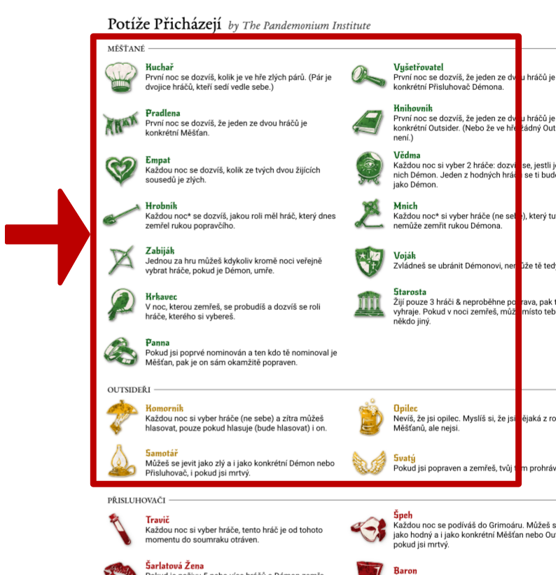
Zlí
Je to jeden Démon a jeho Přisluhovači. Démon v noci vraždí a Přisluhovači se ho snaží ochránit, aby ho hodný tým neodhalil.
Musí „vyvraždit celé město“. Zlí vyhrávají, jakmile je naživu jen jeden hráč a Démon.
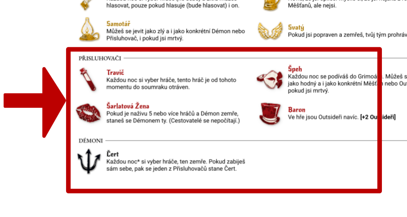
Průběh Hry
Hra se dělí do tří hlavních fází: Noc, Den a Večer které se stále opakují. Začíná se nocí!
Noc
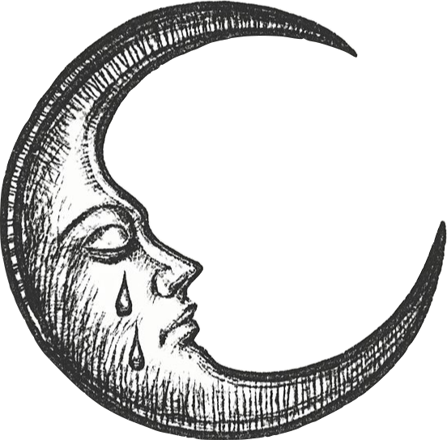
- Všichni si zavřou oči a skloní hlavy.
- Vypravěč postupně probouzí role, které se mají probudit a mohou nebo musí použít své schopnosti, včetně Démona, který tu noc vraždí.
- Pokud probíhá úplně První Noc, tak Démon nevraždí, ale vypravěč mu dá 3 Blafy. Blaf je role, která je samozřejmě z aktuálního skriptu, ale zrovna není ve hře. Navíc se ještě Démon dozví, kdo jsou jeho Přisluhovači. Přisluhovači se také dozvědí o sobě navzájem a navíc, kdo je jejich Démon.
Den
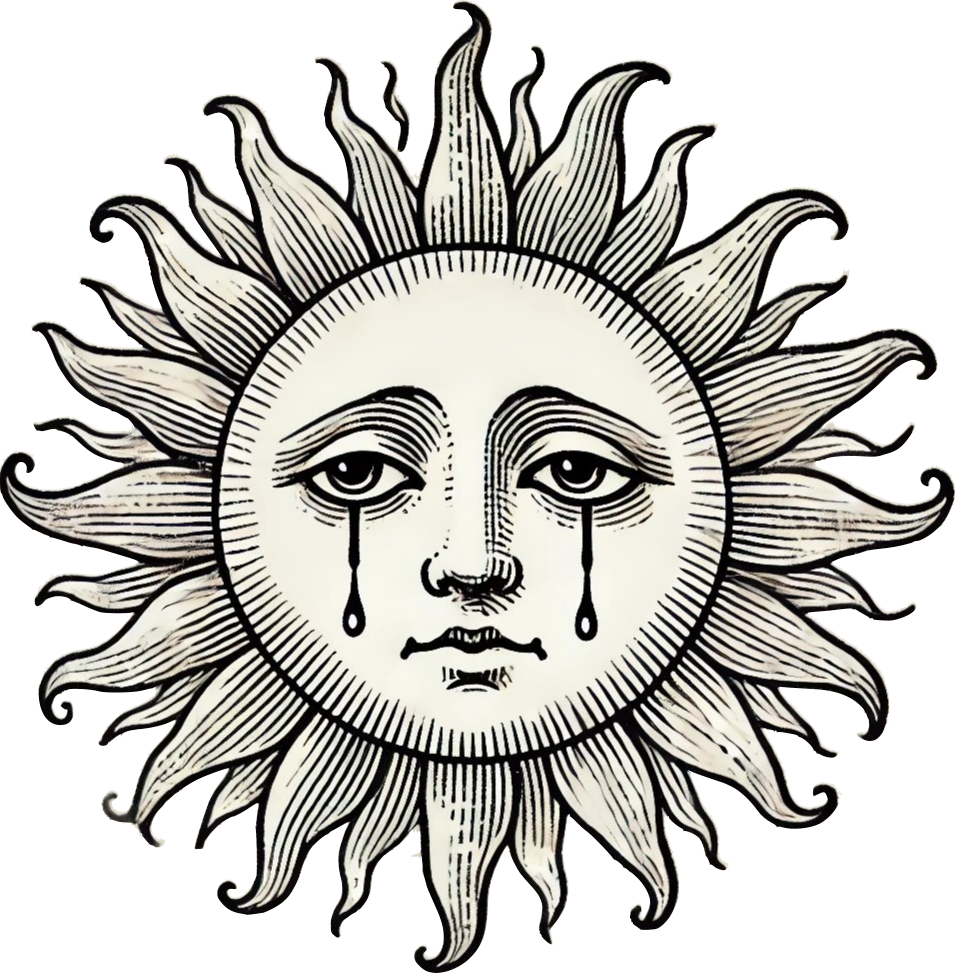
- Vypravěč oznámí, jestli v noci někdo zemřel. Tímto okamžikem začíná Den.
- Během dne se můžete zvednout z židlí a odejít z náměstí a bavit se s kýmkoli a kdekoli. Můžete vést veřejné debaty s celou skupinou, ale i soukromé rozhovory. Je to klíčová fáze pro sběr informací a dedukci k odhalení Démona.
- Pokud máte otázku k pravidlům nebo strategii, můžete se kdykoli obrátit na vypravěče. Vypravěč je neutrální a nejlepší je mluvit s ním o samotě.
Večer
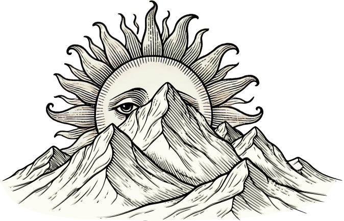
- Všichni hráči si sednou zpátky do kruhu na náměstí a začíná veřejná debata. Je to ideální čas na sdílení informací se všemi.
- Druhá fáze večera jsou nominace a hlasování o tom, kdo bude uvalen do žaláře a následně popraven. Je to šance pro Hodný tým jak vyhrát hru a zbavit se Démona. To, jak probíhá hlasování a nominace se dozvíš níže v sekci: Poprava
- Nakonec vypravěč ukončí nominace a pokud je někdo v žaláři, je tento hráč popraven a umírá. (Během Dne a Večera může proběhnout pouze jedna poprava. Po popravě vždy okamžitě začíná noc.)
Poprava
Poté, co vypravěč v druhé půlce Večera povolí nominace, může kterýkoliv živý hráč oznámit, že chce nominovat jiného hráče. Hráč, který nominoval může pronést obvinění a ten, kdo je nominován může pronést obhajobu. Poté se přechází k hlasování o tom, zda nominovaný hráč bude uvalen do žaláře. Vypravěč si stoupne doprostřed náměstí a postupně se otáčí a ukazuje na všechny hráče v kruhu. Pokud je ruka hráče nahoře, hlasuje PRO uvalení do žaláře, jinak hlasuje PROTI.
Pravidla Nominace:
- Každý hráč může být nominován maximálně jednou za večer.
- Každý živý hráč může nominovat maximálně jednoho (ne nutně živého) hráče za večer.
Pravidla Hlasování:
- Živý hráč může zvednout ruku (a tím hlasovat) za večer, kolikrát chce.
- Pokud je hráč mrtvý, má už jen jeden hlas do konce hry. Takzvaný "hlas ducha".
- Aby nominovaný hráč byl uvalen do žaláře, musí získat počet hlasů, který je roven alespoň 50 % živých hráčů. Například, žije-li 6 hráčů, stačí 3 hlasy na uvalení do žaláře, žije-li 7 hráčů, stačí 4 hlasy.
- Pokud je již jiný hráč v žaláři, například Karel s 6 hlasy a další nominovaný hráč ten večer získá více, například Ondřej, který získal 8 hlasů. Je původní hráč Karel propuštěn z žaláře a do žaláře je uvalen nově odhlasovaný hráč Ondřej.
Stavy Hráče
V každý okamžik hry se nacházíš v kombinaci těchto 4 dvojic stavů, které se v průběhu hry mohou měnit. V jeden moment můžeš být Živý, Hodný, Střízlivý a Opilý a v další moment hry třeba stále Živý, ale Zlý, Střízlivý a Zdravý. Stav se ti může změnit díky schopnostem různých rolí ve hře.
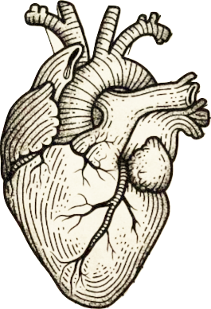
Živý Mrtvý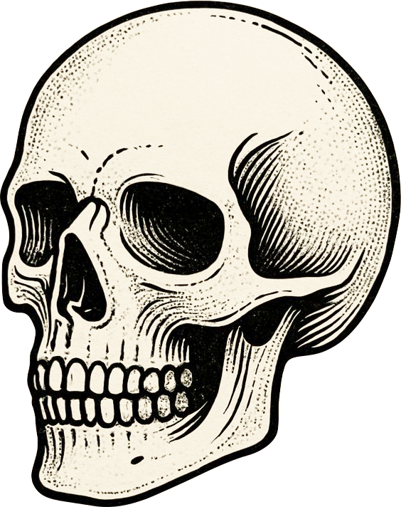
Můžeš nominovat, mluvit, hlasovat a tvá schopnost plně funguje.
Smrtí hra nekončí! Nemůžeš už nominovat a ztrácíš schopnost, ale stále mluvíš a máš do konce hry 1 hlas ducha.
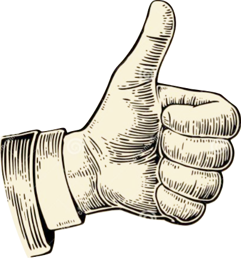
Hodný Zlý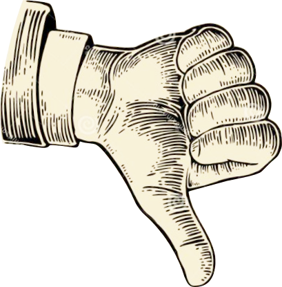
Na začátku jsou to všichni Měšťani a Outsideři. Snažíte se odhalit a popravit Démona.
Démon a Přisluhovači. Snaží se vyvraždit město.
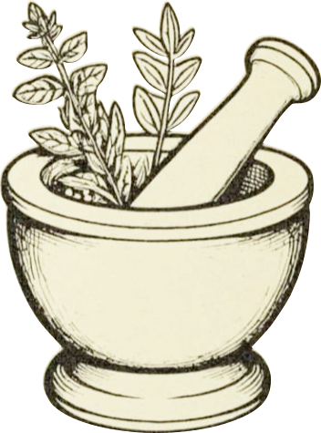
Zdravý Otrávený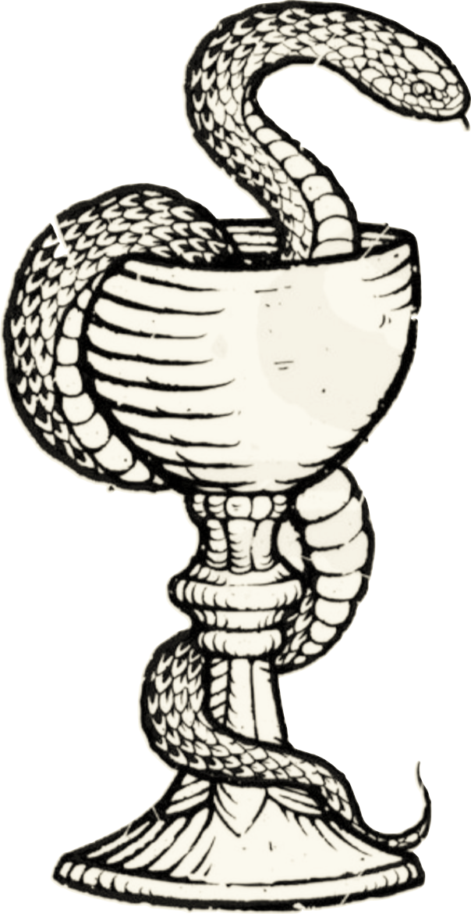
Tvá schopnost funguje správně a získáváš pravdivé informace. Tento stav přebíjí Opilost.
Tvá schopnost nefunguje. Od vypravěče můžeš ale také NEMUSÍŠ dostávat nepravdivé informace. To je čistě na vypravěči.
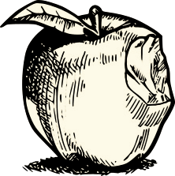
Střízlivý Opilý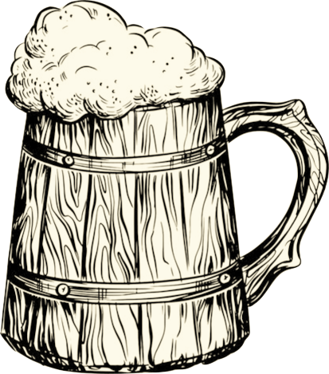
Tvá schopnost funguje správně a získáváš pravdivé informace. Tento stav přebíjí Otrava.
Tvá schopnost nefunguje. Od vypravěče můžeš ale také NEMUSÍŠ dostávat nepravdivé informace. To je čistě na vypravěči.
Jak můžeš vidět, být otrávený nebo opilý má stejný efekt. Možná jsi trochu zmatený a ptáš se a co se děje, když jsem Střízlivý, ale Otrávený, nebo naopak Opilý, ale Zdravý? V tomto případě tvá schopnost nefunguje a můžeš dostávat nepravdivé informace. Jinými slovy, stačí ti jeden špatný efekt, aby tvoje schopnost nefungovala.
Čtyři Základní Pravidla
- 1. Mluv, co hrdlo ráčí: Můžeš mluvit s kýmkoli, kdykoli a o čemkoli. Kromě noci! V noci se o hře nemluví.
- 2. Nepodváděj! Neotvírej v noci oči a nikdy se nedívej do vypravěčovy knihy, Grimoáru, kde jsou všechna tajemství světa.
- 3. Ptej se vypravěče: Pokud něčemu nerozumíš, ptej se. Vypravěč je zde, aby ti pomohl. Ptej se soukromě a vždy ho poslouchej - je to pán hry.
- 4. Hrej důstojně: Hra je o lsti a klamu, ale vždy se chovejte s respektem k ostatním. Zabíjej s grácií a umírej s důstojností!